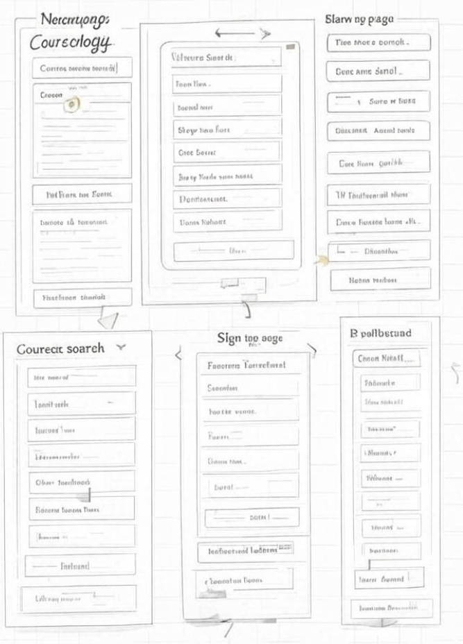
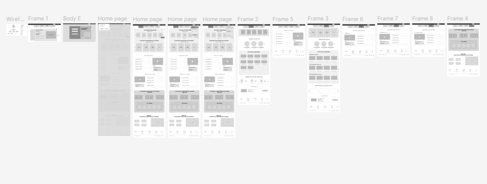
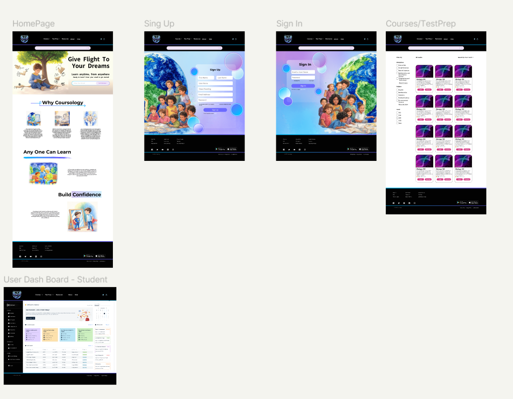

My Contribution
Role
I was the Lead Designer in this project. My job was to design a web application from ground up based on the businesses requirements. Along with conducting research to understand how the branding of the business should be done.
Project Type
Web Application
Project Duration
July 2024 to Current
Design Tool
-
Figma:
For prototyping, visual design, and illustrations.
-
Adobe Suite:
For designing and sketching up graphics, images, and assets for the application.
-
UserTesting:
To validate usability and flows.
-
UXPin:
To create and manage design systems.
Coursology
Coursology is an online learning platform startup focused in providing education to individuals from all walks of life.
Overview
Coursology is an online learning platform designed to make education accessible, engaging, and personalized for students of all backgrounds. It features courses in various disciplines, test prep resources, a user dashboard for managing enrolled courses, homework, exams, and more. The interface emphasizes inclusivity, confidence-building, and flexible learning, with vibrant illustrations and intuitive navigation.
Design Process:
The development likely followed an iterative, user-centered approach:
-
Research:
Analyzed learner needs through surveys, focusing on accessibility, personalization, and engagement.
-
Wireframing:
Sketched core screens (homepage, forms, dashboard) to outline structure and flows.
-
Prototyping:
Built interactive mockups (possibly in Figma) to test navigation, filters, and dashboard interactions.
-
Visual Design:
Developed a style guide with illustrations, colors, and components for thematic consistency.
-
Usability Testing:
Evaluated with target users (students, educators) to iterate on forms, filters, and visuals.
-
Iteration:
Refined based on feedback, ensuring responsiveness and inclusivity.
Understanding Flow and Business Needs

Wireframing

Building Component Library
 Design
Design

Reflections:
This project excels in blending educational functionality with inspirational design, creating an inclusive platform that motivates learning. Key lessons include leveraging illustrations for emotional connection and prioritizing dashboard efficiency. Future enhancements could integrate AI recommendations or community features to further personalize the experience.
Thank You!
Thank you for reviewing my work. If you have any questions or want to just connect - feel free to reach out to me via email.